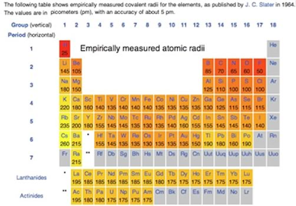

| Chapter 2.7: Quantum
numbers |
The answer to our dilemma is provided by quantum numbers (whose derivation we will not consider). Basically we can describe the wave function for each individual electron in an atom by a distinct set of three quantum numbers, known as n, l, and ml,. The principal quantum number “n”, is a non-zero, positive integer: n = 1, 2, 3, 4 , etc; these are often referred to as "shells". The higher the value of n, the higher the overall energy level of the electron shell. For each value of n there are only certain allowable values of l, and for each value of l only certain values of ml are allowed. The allowable values of l and ml for each value of n are shown in Table 2.1. While this may seem confusing (it is!), it is the result of these calculations that we are really interested in, that is the types orbitals (electron density distributions) designated by the set of quantum numbers. |
2.1 Electrons & Orbitals |
|
Hydrogen has one electron in a 1s orbital and we write its electron configuration as 1s1. Helium has both of its electrons in the 1s orbital (1s2). In Li the electron configuration is 1s2 2s1, which tells us that the electron is being removed from a 2s orbital. Quantum mechanical calculations tell us that in 2s orbital there is a higher probability of finding electrons further out from the nucleus than the 1s orbital, so we might well predict that it takes less energy to remove an electron from a 2s orbital (found in Li) than from a 1s orbital (found in H). Moreover, the 1s electrons which are a filled shell act as a sort of shield between the nucleus and the 2s electrons. The 2s electrons “feel” what is called the effective nuclear charge - which is smaller than the real charge because of the shielding of the 1s electrons. In essence two of the three protons in the lithium nucleus are counterbalanced by the two 1s electrons. The effective nuclear charge in lithium is +1. The theoretical calculations are borne out by the experimental evidence - a good test of a theory. At this point, you might start getting cocky, you may even be ready to predict that ionization energies across the periodic table from Li to Neon (Ne) Ne will increase, with a concomitant decrease in atomic radius. In the case of atomic radius, this is exactly what we see (see Figure). Again the reason for both these trends is that each electron is attracted by an increasing number of protons as you go from Li to Ne - that is the effective nuclear charge is increasing. Electrons that are in the same quantum shell do not interact much, and each electron is attracted by all the (unshielded) charge on the nucleus. By the time we get to fluorine (F) (which has an effective nuclear charge of 9-2 = +7) and neon (10 - 2 = +8) each of the electrons are very strongly attracted to the nucleus, and very difficult to dislodge. As you have undoubtedly noted from considering the graph, the increase in ionization from lithium to neon is not uniform: there is a drop in ionization energy from beryllium to boron and from nitrogen to oxygen. This arises from the fact that as the number of electrons in an atom increases the situation becomes increasingly complicated. Electrons in the various orbitals influence one another, and some of these effects are quite complex and chemically significant – we will return to this in a little more detail in Chapter 3 and at various points through the rest of the book. If we use the ideas of orbital organization of electrons we can make some sense of patterns observed in ionization energy. Let us go back to the electron configuration. Beryllium (Be) is 1s2 2s2 while Boron (B) is 1s2 2s2 2p1 . When electrons are removed from Be and B they are removed from the same quantum shell (n=2), but, in the case of Be, one is removed from the 2s orbital, while in B, the electron is removed from a 2p orbital. While s orbitals are spherically symmetric, p orbitals have dumb-bell shaped and a distinct orientation. Electrons in a 2p orbital have lower ionization energy, because they are (on average) a little further from the nucleus, and so a little more easily removed compared to 2s electrons. That said, the overall average atomic radius of boron is smaller than beryllium, because on average all its electrons spend more time closer to the nucleus. The slight drop in ionization potential between nitrogen and oxygen has a different explanation. The electron configuration of nitrogen is typically written as 1s2 2s2 2p3 but this is misleading: it might be better written as 1s2 2s2 2px1 2py1 2pz1 , with each 2p electron located in a separate p orbital. These p orbitals have the same energy, but are oriented at right angles to one another. This captures another general principle - electrons do not pair up into an orbital until they have to 67. Since the p orbitals are all of equal energy, each of them can hold one electron before pairing is necessary. When electrons occupy the same orbital, there is a slight repulsive and destabilizing interaction; when multiple orbitals of the same energy are available, the lowest energy state is the one with a single electron in an orbital. Nitrogen has all three 2p orbitals singly occupied, and therefore the next electron (which corresponds to oxygen) has to pair up in one of the p orbitals. Thus it is slightly easier to remove a single electron from oxygen than it is to remove a single electron from nitrogen (as measured by the ionization energy). |
| To pull together a set of seriously obscure ideas, the trends in ionization energies and atomic radii indicate that electrons are not uniformly distributed around an atom’s nucleus, but rather have distinct distributions, described by the rules of quantum mechanics. While the details of these rules are derived from rather complex calculations, and involve the wave behavior of electrons, we can cope with them through the use of quantum numbers and electron probability distributions. |
 |
Typically electrons in unfilled shells are more easily removed or reorganized than those in filled shells, because atoms with unfilled shells have higher effective nuclear charges. Once the quantum shell is filled the set of orbitals acts like a shield, and “cancels out” an equal amount of nuclear charge. The next electron goes into a new quantum shell and the cycle begins again. This has profound implications for how these atoms react with one another to form new materials, since as we will see, chemical reactions involve those electrons that are energetically accessible: the valence electrons. We could spend the rest of this book (and probably one or two more) discussing how electrons are arranged in atoms but in fact, your average chemist is not much concerned with atoms as entities in themselves. As we have said before – naked atoms are not at all common. What is common is combinations of atoms, linked together to form molecules. From a chemist’s perspective, we need to understand how, when and where atoms interact. The electrons within inner and filled quantum shells are “relatively inert”, which can be translated into English to mean that it takes quite a lot of energy (from the outside world) to move them around. These electrons are often referred to as core electrons; they generally play no part in chemical reactions and we really do not need to think about them much more, except for the fact that they form a shield between the nucleus and the outer electrons. The results of their shielding does, however, have effects on the strong interactions, commonly known as bonds, between atoms of different types, which we will discuss in chapters 4 and 5. Reflecting back on chapter 1, we can think about the distinction between the van der Waals interactions acting between He atoms and H2 molecules versus the bonds between the two H atoms in a H2 molecule. |
Bonds between atoms involve the valence electrons that are found in outer and usually partially filled orbitals. Because of the repeating nature of electron orbitals, it turns out that there are patterns in the nature of interactions atoms make - a fact that underlies the organization of elements in the periodic table. We will come back to the periodic table once we have considered how atomic/electronic structure influences the chemical properties of the different elements. |
2.1
Electrons & Orbitals |
Question to ponder:
Questions for later:
|
| 27-Jun-2012 |